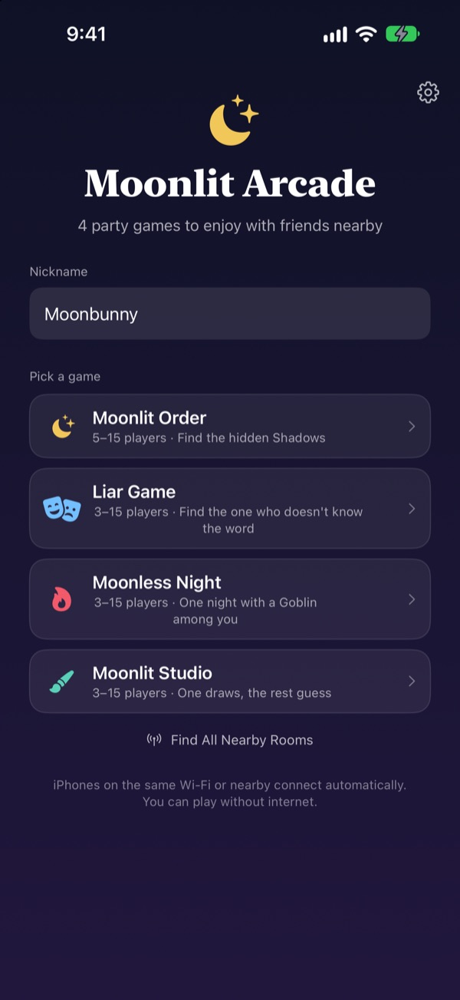
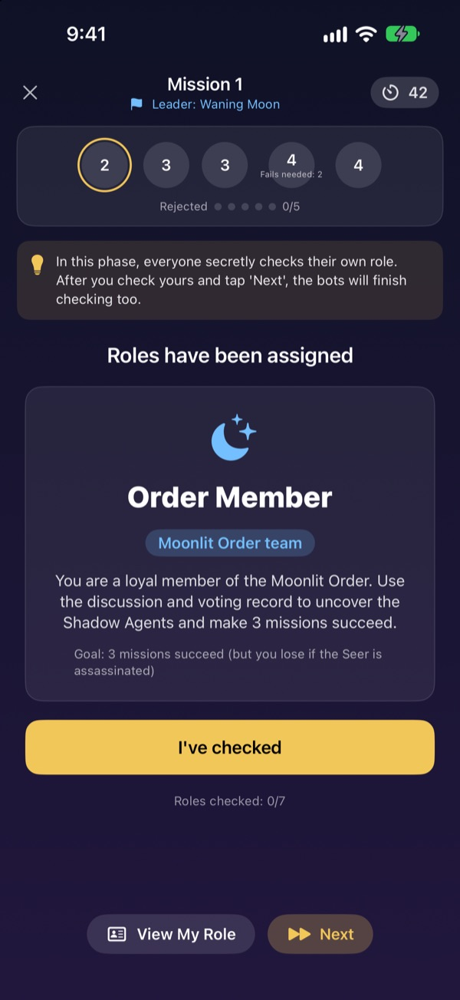
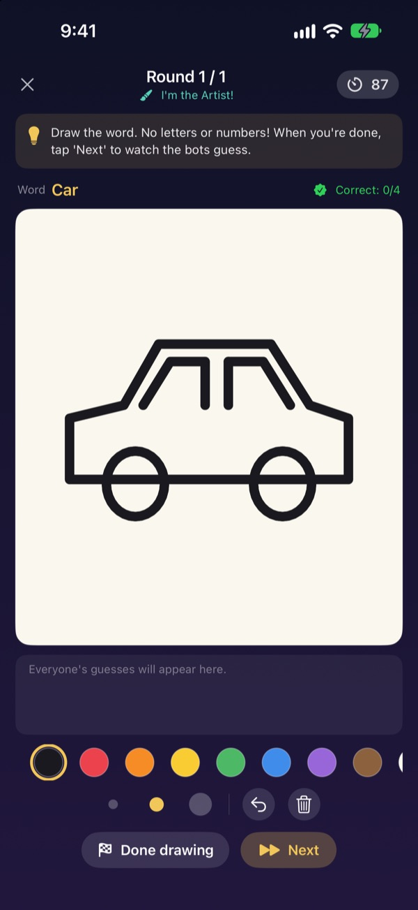
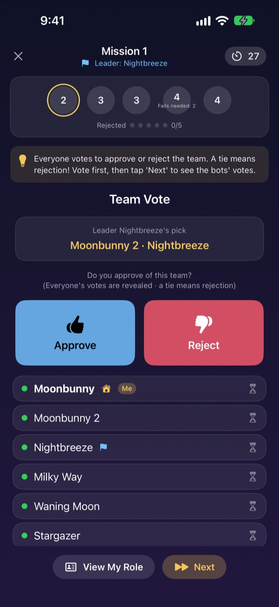

Everyone's here.
Grab your iPhones.
One person opens a room and everyone nearby joins in seconds. Roles and secret words show up only on each player's own screen, so no cards and no one stuck running the game.
Every game is free. No account, no internet needed.

Play a round of Liar Game
Picture five iPhones on the table and tap each one to peek. Only one player doesn't know the word. Pass the screen around with friends if you like.
A crowd, a free evening, and nothing to play
A night in with mates, a weekend away, Christmas with the family. For a hidden-role game someone has to sit out and run it, and folded paper slips are never quite secret. In a holiday let with patchy Wi-Fi, online games are out too. Moonlit Arcade lets the iPhones run the game, deal the roles and connect to each other.
Your role stays on your screen
When the game starts, each iPhone gets its own role or word. No passing cards around, no everyone-close-your-eyes.
During a vote you only see who has voted. Who voted for whom stays secret until the reveal.

Four games for any crowd
Talk your way through Liar Game, hunt the Shadows with missions and votes in Moonlit Order, find the Goblin in one night in Moonless Night, or draw and guess in Moonlit Studio.
Moonlit Order starts at 5 players, the rest at 3, and every game takes up to 15.

New game? Learn it in minutes
Every game has a How to Play mode where you play a round with bots, one step at a time. Read the tip at the top and tap Next.
If the app closes or the connection drops, tap Resume on the home screen and you're back in the same round.

Three steps to start
- 1
Pick a nickname and a game
Everyone opens the app, types a nickname and picks the game.
- 2
Create or join a room
One person creates a room. Everyone else finds it under Find Nearby Rooms.
- 3
The host starts
Once everyone is in, the host taps Start Game. The app runs the rest.
The four games
- Liar Game · 3 to 15 players
- Everyone gets the same word except one. Take turns describing it, then vote for the Liar. If the Liar is caught but guesses the word, the Liar still wins.
- Moonlit Order · 5 to 15 players
- Find the Shadows hiding among the Order. The leader picks a mission team, everyone votes for or against, and the team secretly plays success or fail. First to three missions decides it.
- Moonless Night · 3 to 15 players
- One night, and a Goblin is hiding in the village. At night the Shaman, Night Thief and Prankster act in secret. At dawn you talk it over and get a single vote to find the Goblin.
- Moonlit Studio · 3 to 15 players
- One player draws the word, the rest guess in the chat. The faster you guess, the more you score, and the artist scores for every correct guess.
Any game can be tried solo with bots first in How to Play mode.
Questions
I can't see the room.
Make sure the host and players are on the same Wi-Fi or close to each other. Moonlit Arcade must be turned on in Settings ▸ Privacy & Security ▸ Local Network to find nearby devices. Keeping both Wi-Fi and Bluetooth on gives the steadiest connection.
Do I have to allow Local Network access?
Yes. That's how the app finds and connects to iPhones nearby. If you tapped Don't Allow, turn it back on in Settings ▸ Privacy & Security ▸ Local Network.
I got disconnected mid-game.
Reopen the app and tap Resume on the home screen to rejoin the same room and round. Your role and score are still there. If it doesn't reconnect for a while, join again from the room list.
Someone stopped responding and the game is stuck.
The host can remove an unresponsive player at any time, and the game re-counts with whoever is left and carries on. GM Host Mode can also skip a stalled step.
How many players do we need?
Moonlit Order needs 5. Liar Game, Moonless Night and Moonlit Studio start at 3. Every game takes up to 15. Not enough people? Learn the rules with bots in How to Play mode.
Do we need internet or an account?
No. No sign-up, no sign-in, no internet. Nearby iPhones connect directly, and game data is never sent to a server.
Can I try a game by myself first?
Yes. Pick a game and choose How to Play (Practise with Bots). Bots join the room and you play a full round step by step.
How do I report a bug or send an idea?
Send it straight from Settings (the gear) ▸ Support in the app, or email us at the address below. We'll reply as soon as we can.
Bug reports, ideas or anything else: write to mizzking75@gmail.com.